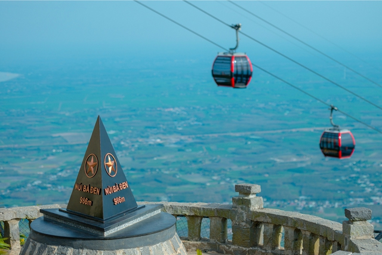

Chiêm ngưỡng thác nước 3 tầng giữa đại ngàn Trường Sơn
Thứ ba, 08/08/2023, 07:46 (GMT+7)
Là một trong những điểm du lịch tâm linh đang cực "hot", lượng du khách đến với khu du lịch Núi Bà Đen (Tây Ninh) thường rất đông vào những ngày cuối tuần hoặc lễ, tết, không tránh khỏi tình trạng xếp hàng chờ đợi mua vé cáp treo. Nhằm hỗ trợ du khách giải quyết vấn đề này, Sun World Ba Den Mountain vừa cho ra mắt thẻ trải nghiệm không giới hạn dịch vụ cáp treo của Sun World Ba Den Mountain, giúp du khách thoải mái săn mây và tham gia tất cả các trải nghiệm tâm linh tại núi Bà Đen, từ nay đến 31.12.
Thẻ trải nghiệm không giới hạn dịch vụ cáp treo không chỉ cho phép du khách đi cáp lên núi Bà bất cứ thời điểm nào theo lịch vận hành cáp tại Sun World Ba Den Mountain, mà còn được miễn phí dịch vụ WOW Pass - Gold - lối đi ưu tiên qua các cổng soát vé mà không phải xếp hàng chờ đợi. Mỗi thẻ trải nghiệm sẽ chỉ áp dụng cho một chủ thẻ. Khách hàng mang theo thẻ và giấy tờ tùy thân (CMND/CCCD/ Giấy phép lái xe) để đăng ký thông tin chủ thẻ vào lần đầu tiên sử dụng, tại phòng vé của Sun World Ba Den Mountain. Các lần tiếp theo, khách hàng chỉ cần xuất trình thẻ tại cổng soát vé để đi cáp. Theo thông tin từ khu du lịch Sun World Ba Den Mountain, trong 7 tháng đầu năm, cáp treo lên núi Bà Đen đón đến 3,7 triệu lượt khách, trong đó rất nhiều du khách đã trở đi trở lại nhiều lần để lễ bái hoặc tham gia các lễ hội tâm linh như Lễ hội xuân núi Bà, đại lễ Phật đản, hay mới đây là Lễ vía Bà Linh Sơn Thánh Mẫu.
Giới thiệu
Tell Ur Mom II - Winno ft. Heily「Cukak Remix」/ Audio Lyrics Video
Follow Me

Liên hệ
Điện thoại: 0987654321
Email: web1013@dinhnt.com